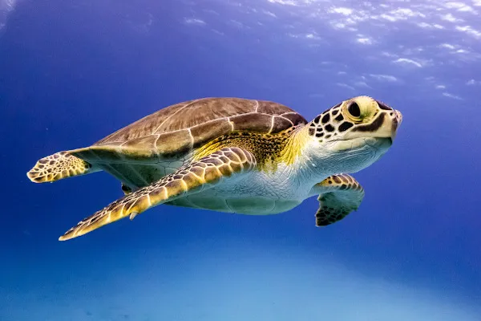
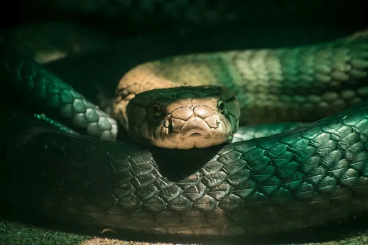
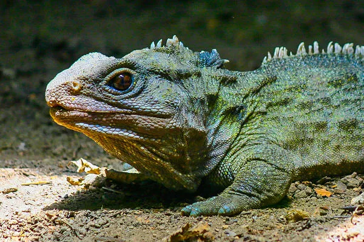
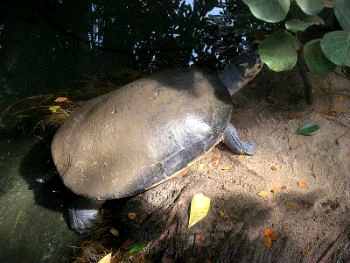
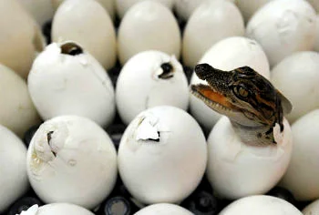
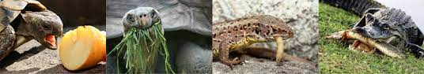
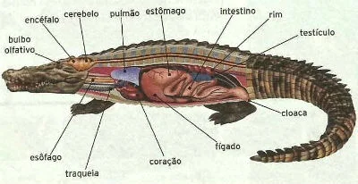
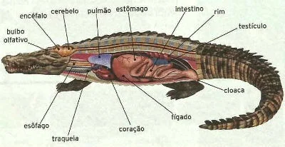
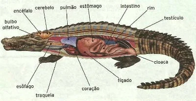

"Réptil (do latim, reptare, “rastejar”) é um termo usado tradicionalmente para referir-se a um grupo de animais vertebrados tetrápodes, amniotas e ectotérmicos, no qual estão incluídos serpentes, lagartos, tartarugas e crocodilos. Atualmente existem mais de 9000 espécies diferentes de répteis espalhadas por todo o planeta (exceto nos polos).
De acordo com a Lista Brasileira de Répteis, publicada pela Sociedade Brasileira de Herpetologia, o Brasil apresenta hoje 795 espécies de répteis, sendo 36 Testudines, seis Crocodylia e 753 Squamata (72 anfisbenas, 276 “lagartos” e 405 serpentes). Com esses números, o Brasil é considerado possuidor da terceira maior riqueza mundial de répteis."
Os répteis são animais vertebrados que pertencem ao Reino Animalia, Filo Chordata e Classe Reptilia.
Na história evolutiva, os répteis foram os primeiros animais vertebrados a conquistarem o ambiente terrestre.
São exemplos de répteis: tartaruga, jabuti, cágado, cobra, serpente, jacaré, crocodilo, camaleão, iguana e lagarto.
"Características gerais dos répteis
Répteis são animais tetrápodes (que apresentam quatro membros) e amniotas (cujos embriões são envolvidos pela membrana amniótica). Eles são bem adaptados a viver no ambiente terrestre, apresentando epiderme grossa com escamas e/ou osteodermas (depósitos ósseos), que os tornam resistentes à dessecação, além de alguns representantes botarem ovos com cascas que protegem o embrião e de todos eles também realizarem fecundação interna, que evita a dessecação dos gametas.
Os répteis são animais ectotérmicos, ou seja, não são capazes de manter a temperatura corporal utilizando seu metabolismo. Para conseguir manter a temperatura adequada, eles absorvem o calor externo, aquecendo-se, por exemplo, expondo-se ao Sol. É devido a essa características que os répteis são chamados de animais de “sangue frio” e não são capazes de viver na região dos polos."
"Testudines"

"Testudines ou quelônios são um grupo de répteis em que estão incluídos tartarugas, cágados e jabutis. Os cágados são animais de água doce e semiaquáticos. Os jabutis, por sua vez, são animais de ambiente terrestre. As tartarugas são aquelas que vivem no ambiente marinho, apesar de o termo ser também utilizado para espécies de água doce, como o tigre-d'água.
A característica mais marcante desse grupo é a presença de um um casco. A carapaça (porção dorsal do casco) é formada pela fusão da coluna vertebral com as costelas. A parte ventral desse casco, chamada de plastrão, é formada, principalmente, por ossificações dérmicas e, com a carapaça, forma uma estrutura óssea rígida que garante a proteção desses animais. Outra característica importante dos quelônios é a substituição dos dentes por um bico córneo."
"Squamata"

"Os escamados incluem as serpentes e os lagartos e, como o nome indica, apresentam o corpo coberto por escamas. Os lagartos são animais que variam muito em tamanho, existindo espécies com cerca de 16 mm (lagarto-jaraguá) até espécies que atingem grandes comprimentos, como é o caso do dragão-de-komodo, com cerca de 3 m de comprimento. São encontrados em diferentes ambientes, existindo representantes vivendo em desertos e até espécies arborícolas.
As serpentes bem como os lagartos também variam em comprimento, sendo observadas serpentes constritoras de quase 10 metros. Elas são animais que descendem de lagartos, sendo possível observar, em algumas espécies, a presença de ossos pélvicos e membros vestigiais. Apesar de não apresentarem pernas, esses animais são capazes de mover-se rapidamente pelo ambiente por meio de movimentos de ondulação lateral. Caso queira aprofundar-se nessa classificação, leia: Squamata."
"Crocodylia"
"Os crocodilianos são répteis que ocupam, normalmente, regiões mais quentes do planeta e que, em geral, apresentam alta pluviosidade ou rios, lagos, estuários e mares pouco profundos. Apresentam crânio alongado, pescoço curto e musculoso, mordida extremamente forte e cauda longa. São animais que variam em tamanho, existindo espécies que chegam a atingir quase 8 metros de comprimento."
"Rhynchocephalia"

"Rhynchocephalia é uma linhagem de répteis que atualmente apresenta apenas um representante: a tuatara. Esses animais são encontrados apenas na Nova Zelândia, alimentam-se de insetos, ovos e pequenos lagartos e possuem cerca de 50 centímetros de comprimento."
Testudinata

Também chamados de quelônios, são representados pelas tartarugas, cágados e jabutis. As tartarugas vivem em ambiente de água doce e salgada. Os cágados são encontrados em água doce e os jabutis em terra firme.
Reprodução

A maior parte dos répteis são ovíparos. Apenas algumas cobras e lagartos são ovovivíparas.
Apresentam fecundação interna, onde o macho introduz os espermatozoides no interior do corpo da fêmea.
O desenvolvimento do embrião ocorre dentro dos ovos, os quais são revestidos por cascas córneas ou calcárias.
Essa característica protege o embrião da dessecação, importante para a conquista do ambiente terrestre.
O ovo apresenta os seguintes anexos embrionários: âmnio, cório, saco vitelino e alantoide.
Quando os filhotes nascem assemelham-se aos adultos, pois o desenvolvimento é direto.
Sistema digestório e alimentação

O sistema digestório é completo. Eles apresentam boca, faringe, esôfago, estômago, intestino e cloaca. Além disso, possuem fígado e pâncreas.
A maioria dos répteis são carnívoros. Algumas poucas espécies são herbívoras e onívoras.
Alguns répteis, como o jacaré e a matamatá, são animais predadores e ocupam o topo da cadeia alimentar.
Sistema Circulatório
A circulação é fechada, dupla e completa.
O coração de serpentes e tartarugas apresenta dois átrios e um ventrículo incompletamente separado. Enquanto os crocodilianos apresenta dois átrios e dois ventrículos bem definidos.
Sistema Respiratório
Os répteis apresentam respiração pulmonar. Os pulmões apresentam alvéolos pulmonares tornando eficiente as trocas gasosas.
Sistema Sensorial
O órgão olfativo dos répteis lhes permite sentir o gosto e o cheiro, sendo que a maioria dos répteis é capaz de ouvir sons.
A visão não é privilegiada, mas os olhos possuem pálpebras e membrana nictitante para protegê-los quando submersos.
Quando estão em terra, são hidratados por glândulas lacrimais, dai a expressão “lágrimas de crocodilo”, uma vez que aqueles animais “choram” com frequência.
As serpentes apresentam a fosseta loreal, um orifício entre o olho e a narina com função de termorrecepção.
Características:

CARACTERÍSTICA: O corpo dos répteis é formado por cabeça, pescoço, tronco e cauda.
Eles possuem dois pares de membros locomotores, cada um com cinco dedos acabados em garras e pernas reduzidas em alguns lagartos, mas ausentes em outros, como as cobras.
Eles podem ser animais rastejantes ou nadadores, como as tartarugas marinhas que possuem patas em forma de remos.
A pele é ressecada e resistente, coberta por escamas de origem epidérmica, o que a torna queratinizada e praticamente impermeável.
Porém, alguns animais, como as tartarugas e jabutis, também podem apresentar placas ósseas de origem dérmica.
Temperatura corporal: Os répteis são animais pecilotérmicos, ou seja, são incapazes de manter a sua temperatura corporal constante. Assim, eles necessitam do calor do ambiente para regulação da temperatura corporal.
Essa condição limita sua localização dos seus habitats aos trópicos e subtrópicos do planeta, onde as temperaturas favorecem o seu metabolismo. Por isso, não encontramos répteis na Antártica.

 
